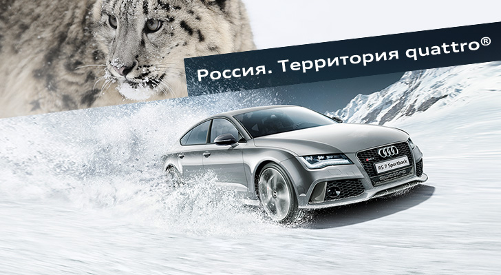

quattro (итал. четыре) — название, используемое компанией AUDI AG для обозначения технологий, либо систем постоянного полного привода (AWD), применяемых в конструкции тех или иных автомобилей Audi. Слово quattro является зарегистрированным товарным знаком компании AUDI AG (дочернее предприятие немецкого автомобильного концерна Volkswagen Group). Система quattro была впервые применена в 1980 году в конструкции автомобиля Audi Quattro с постоянным полным приводом (сегодня этот автомобиль известен также как Ur-Quattro; «Ur-» — нем. «древний», «пра-»). В дальнейшем термин quattro применялся ко всем полноприводным моделям Audi. По терминологическим причинам, связанным с существованием товарного знака, название системы полного привода quattro пишется со строчной буквы, чтобы принести дань уважения первой модели. Остальные компании в составе Volkswagen Group применяют для обозначения полноприводных автомобилей другие товарные знаки (для автомобилей марки Volkswagen изначально применялось обозначение syncro, недавно уступившее место товарному знаку 4motion; в компании Škoda полноприводные автомобили обозначают, добавляя к названию модели «4×4»; в SEAT ограничиваются цифрой «4»). Ни один из вышеописанных товарных знаков и терминов не определяет тип системы полного привода